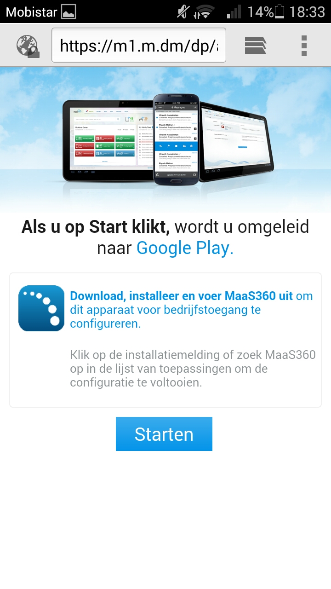

Testopstelling
June 22, 2016Mobile Device Management: Spiceworks
Spiceworks is een MDM (Mobile Device Management). Dit wil zeggen dat je gaat proberen om mobiele toestellen te controleren en beheren via een computer. We hebben het native laten draaien op de computer van Yordi met een Windows als OS. Hiervoor hebben we ook de Spiceworks trial gebruikt. Dit project is getest met oog op mogelijke ingebruikname door de school.
We hadden de bedoeling om verschillende opties te testen. Zo wilden we testen of het aantal gekoppelde apparaten correct was en er een correcte scheiding tussen de hoeveelheid Android en iOS apparaten was. Ook wilden we testen of we de informatie van de eigenaar van het mobiele toestel konden zien en of we de geïnstalleerde apps konden bekijken. Indien de vorige opties werkten, waren we van plan om eenmalig $4 te betalen om extra functies te testen, zoals bijvoorbeeld het bepalen van de juiste locatie van een gekoppeld apparaat indien we dit willen opzoeken/opvragen.
Om te beginnen hebben we de trial-versie van Spiceworks geïnstalleerd. Om dit te doen moesten we wel een gebruikersnaam aanmaken op de website. Dit verliep vrij tot zeer vlot. Eens dat gebeurd was, kwamen we terecht op een localhost pagina waar we enkele stappen moesten volgen om de installatie te voltooien. We moeten een gebruikersnaam, wachtwoord en bedrijfsnaam ingeven. Wanneer deze stappen klaar waren, kwamen tot het punt om Spiceworks te testen.
Als eerste stap in het testproces hebben we een gebruiker aangemaakt. Hiermee bedoelen we de eigenaar van een mobiel apparaat dat in het systeem zit. In het begin was dit even uitzoeken, maar uiteindelijke lukte het wel om een gebruiker correct aan te maken. Vervolgens kreeg de gebruiker een e-mail om zijn account te verifiëren door middel van een link en wachtwoord. Hierna wordt je doorgeleid naar een pagina die verwijst naar de Google Play Store om de app te downloaden. Indien je een Android toestel hebt, heet de app ‘MaaS360 MDM for Android’. Beschik je over een iOS apparaat, dan heet de app ‘MaaS360 for iOS. Als je de app opent moet je eerst de bedrijfs-ID en je e-mailadres ingeven. Wanneer je op ‘doorgaan’ hebt geklikt, moet je legitimatiegegevens invoeren. Uiteindelijk wordt MaaS360 geactiveerd op je toestel. Als voorlaatste stap moet je de Apparaatbeheerder toegang geven tot je toestel, zodat hij bijvoorbeeld alle gegevens kan wissen, wachtwoorden wijzigen enz. Tot slot wordt je toestel geconfigureerd.
Uiteindelijk is gebleken dat Spiceworks niet werkt. Er was niets te zien op het dashbord en een mobiel apparaat konden we ook niet registreren, ook al was het correct geconfigureerd op het toestel zelf. Nadat we tot de conclusie kwamen dat Spiceworks niet meer werkte, hebben we besloten niet op te geven. We hebben nog een viertal uurtjes geprobeerd om het te laten werken, we hebben tutorials gevolgd op Youtube en dergelijke, maar niets zorgde ervoor dat het werkte. Desondanks het feit dat de tool niet werkte zoals we gehoopt hadden, kunnen we wel al bepaalde zaken concluderen nadat we de tutorials hebben gevolgd en uit eigen ontdekkingen tijdens het uitvoeren van de testen.
Als eerste punt, en misschien wel het meest interessante voor de school, is dat je accounts uit de AD (Active Directory) kan implementeren in Spiceworks. Vervolgens is het ook mogelijk om een overzicht te hebben over het aantal Android, Windows en iOS apparaten. Aangezien Spiceworks een gratis basis versie heeft, veronderstellen we dat de school wel wil investeren in de $4 per apparaat. Hierdoor wordt het ook mogelijk om verloren apparaten te traceren. Indien iemand zijn wachtwoord kwijt is, kan de beheerder een password-reset uitvoeren. Hierdoor zal de gebruiker een nieuw wachtwoord kunnen ingeven. Het meest interessante voor de school zal ongetwijfeld zijn dat men websites kan blokkeren. Zo is men dus zeker dat ‘foute’ of illegale websites niet bezocht worden.
Enkele screenshots
